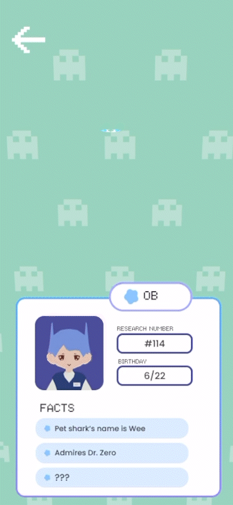

An AR mobile game for language learning through real-world exploration. Players collect vocabulary by walking to GPS-anchored waypoints placed around them in the environment.
The game is structured around a fictional organization — the ICRC, the Interplanetary Communications Research Company — whose goal is to study how human brains memorize foreign words. Players are hired by Dr. Zero to assist with fieldwork, which in practice means walking around while memorizing vocabulary with interactive challenge spots in AR.
Multiple studies indicate that information retention increases during light-to-moderate aerobic exercise, with additional gains from spaced repetition across sessions. The game mechanic is designed around both findings.
Physical Activity and Language Learning ↗ || Physical Exercise and Neuroplasticity ↗Niantic's Lightship platform maintains a database of real-world "Wayspots" — GPS-tagged locations built from their existing player network. The system queries this database within a configurable radius of the player's position and randomly selects from the returned candidates to place vocabulary waypoints.
One edge case: Wayspots can be indoors or behind access-restricted areas. We filtered by distance and cross-referenced with the device's heading to deprioritize waypoints behind the player.
// Query Niantic Wayspot database within radius, // then randomly select from returned candidates var query = WayspotAnchorService .GetWayspots(playerPosition, radiusMeters); var selected = query .OrderBy(_ => Random.value) .Take(waypointCount).ToList();
Objects dissolve in and out based on world-space Y position — revealing from the ground up on spawn, collapsing downward on dismiss. The clip threshold is a single animated float.
Used world-space Y rather than object-space because ARDK anchors objects at varying elevations. Object-space would have made the effect inconsistent across anchor heights.
// _t: 0 = fully hidden, 1 = fully revealed // clip plane rises from object base to top in world space float baseY = transform.position.y - objectHalfHeight; float topY = transform.position.y + objectHalfHeight; _t = Mathf.MoveTowards(_t, 1f, Time.deltaTime * dissolveSpeed); float cutoff = Mathf.Lerp(baseY, topY, _t); material.SetFloat("_CutoffHeight", cutoff); material.SetFloat("_NoiseStrength", noiseStrength);

ARDK 3.0 generates a real-time mesh of the environment from the device camera, enabling depth occlusion — game objects are correctly hidden behind real-world surfaces rather than rendering on top of everything.
The mesh takes a few seconds to reach usable confidence on session start. We gated object visibility on mesh confidence crossing a threshold, then used the dissolve shader to bring objects in once ready — avoiding the pop from premature spawning.
ARDK's camera processing, meshing, and the game renderer all run concurrently on mobile hardware. A few things we did to stay within budget: